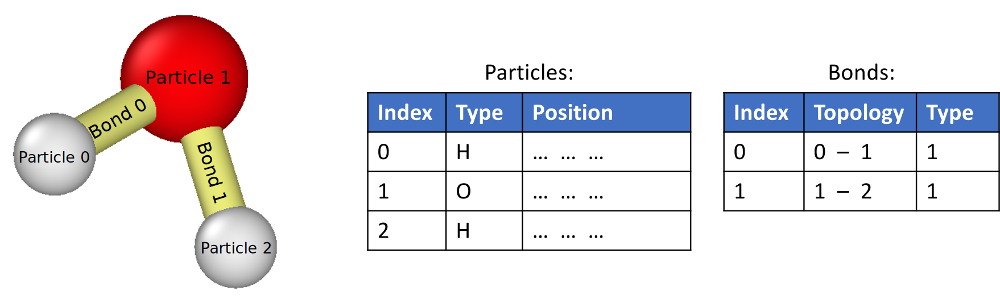

Bonds
Bonds are connections between pairs of particles. In OVITO they are managed in a separate, purely topological data structure holding the connectivity information (a list of pairs of indices into the particles list) as well as any additional attributes associated with the individual bonds. Here is a simple example molecule made of three particles and two bonds. Note that indices are all zero-based.
{kind=link}
The bonds table is an optional part of a molecular dataset. Whether it exists depends on the imported simulation data file. Some file formats contain bonds information, some not. You have the option to let OVITO dynamically create bonds between particles by adding the Create bonds modifier to the current data pipeline. The visual appearance of bonds is controlled by the settings made for the bonds visual element.
Just like particles, bonds may be associated with an arbitrary set of additional attributes, so-called bond properties.
A bond property commonly present is the Bond Type property, which is an integer attribute playing a similar
role as the Particle Type property for particles. It allows you to assign different colors to different kinds of bonds in OVITO
and is typically used by molecular dynamics codes to assign different interaction models to certain pairs of atoms. Of course, it is
also possible for you to control the color of each bond in the system individually by setting their Color property.
A common tool for doing this in OVITO is the Color coding modifier.
The Topology bond property, shown in the table above, is always present. It contains the actual connectivity information,
encoded as pairs of indices into the particles list. OVITO automatically takes care of updating this information if you delete
some of the particles and the particle indices are shifted.
The bonds tab of the Data inspector lets you view the entire list of bonds and their current property values. Another tool for creating bonds in OVITO is the Voronoi analysis modifier, which is able to generate bonds between nearest neighbor particles. Furthermore, general tool modifiers such as Compute property, Expression selection, Assign color and Delete selected are available to manipulate bonds and their properties.
Special bond properties
Certain bond properties play a special role in OVITO, because their values control the visual appearance of the bonds as well as other aspects. The following table lists these properties and describes their respective functions:
Bond property |
Data type (components) |
Description |
|---|---|---|
|
Integer (A, B) |
This bond property is always present and contains the indices of the two particles connected by a bond. Indices are zero-based. |
|
Integer |
Stores the type identifier of each bond. The bond type determines the display color
if the |
|
Real (R, G, B) |
If present, this property controls the display color of individual bonds. Red, green and blue components are in the range [0,1]. |
|
Real |
A value in the range [0,1] controlling the bonds’s transparency. If not present, bonds are rendered fully opaque. |
|
Integer |
Stores the current selection state of bonds (1 for selected bonds; 0 otherwise). |
|
Real |
Per-bond diameters (in simulation units of length). If not present, the uniform bond width is controlled by the bonds visual element. |
See also
ovito.data.Bonds (Python API)